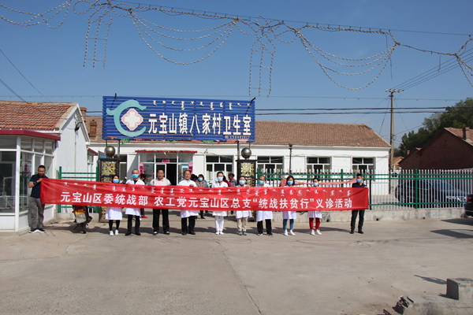

为深化健康扶贫工作，推动“统战扶贫行”活动深入开展，5月29日，元宝山区委统战部、农工党元宝山区总支组织平煤总医院医疗专家团队，到元宝山镇八家村开展医疗义诊活动。

此次活动，以平煤总医院农工党党员医疗专家为主体，组织心内科、肾内科、口腔科、消化内科、麻醉疼痛科、内分泌科等临床经验丰富的主任专家，开展医疗义诊，认真了解村民疾患情况，开展疾病诊断、用药指导、健康知识宣传普及等服务，免费为村民做B超检查、心电图监测等，发放健康教育宣传资料，引导村民培树健康生活方式，做到疾病早预防、早发现、早治疗。
此次义诊活动，共惠及村民60余人，为基层群众节省诊疗费用近1万元。此次义诊活动，让村民在家门口享受医疗专家的诊疗服务，强化自我保健意识，提醒村民防病重于治病，杜绝因病致贫、因病返贫，确保小康路上不落一人。